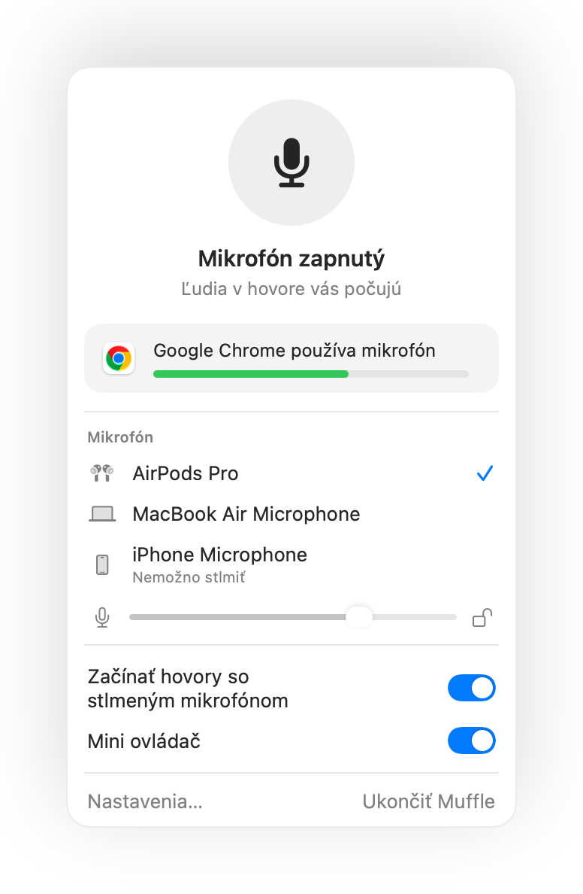
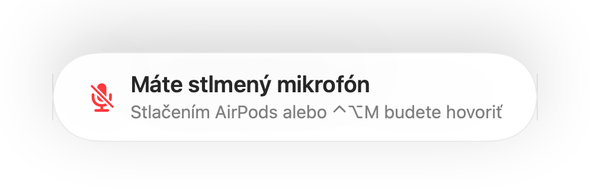
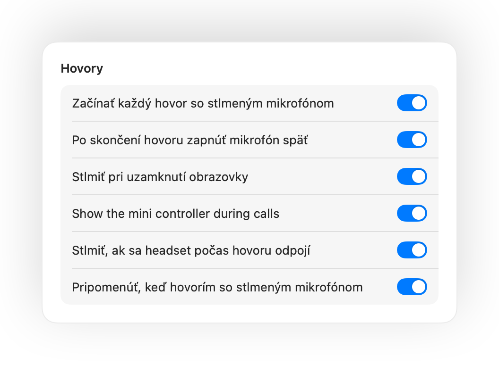
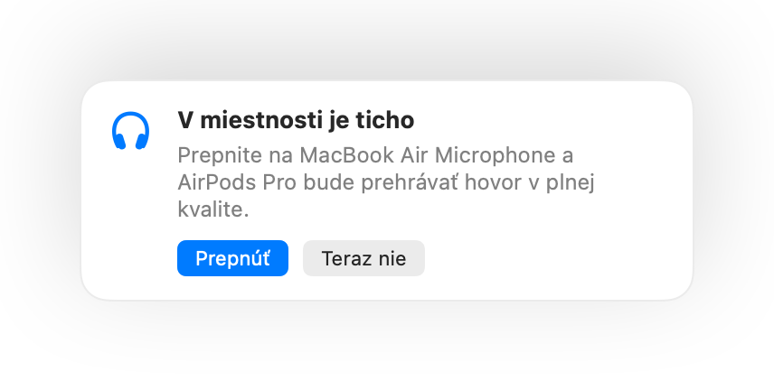

Stlmte mikrofón na Macu odkiaľkoľvek.
Stlačte stopku AirPods alebo jednu klávesovú skratku. Muffle vypína priamo mikrofón, takže Google Meet, Zoom, Teams, Slack aj každá iná aplikácia počujú len ticho.
Na 3 dni zadarmo. Potom jedna platba, žiadne predplatné. Pre macOS 14 Sonoma a novší.

Funguje s každou aplikáciou, ktorá používa váš mikrofón
- Google Meet
- Zoom
- Microsoft Teams
- Slack
- Discord
- FaceTime
- Webex
- Skype
- SoWork
- Gather
- Chrome
- Safari
- Arc
- Edge
- Firefox
Muffle vypína mikrofón na hardvérovej úrovni, takže nezáleží na tom, aká aplikácia, prehliadač alebo tab ho práve používa.
Všetko, čo by mal váš Mac počas hovoru dokázať
Stlmenie stlačením AirPods
Počas akéhokoľvek hovoru stlačte stopku raz na stlmenie a znova na zapnutie. Funguje to dokonca aj v prehliadači Chrome, kde Google Meet a ďalšie webové hovory stlačenie AirPods ignorujú.
Jedna skratka pre každú aplikáciu
Control-Option-M vás stlmí všade, aj keď máte hovor v tabe na pozadí. Podržte a hovorte, aj keď je mikrofón stlmený, po uvoľnení sa znova stlmí.
Pripomienka „Máte stlmený mikrofón“
Začnite hovoriť so stlmeným mikrofónom a Muffle vás upozorní skôr, než poviete celý nápad do prázdna.
Hovory na autopilota
Začínajte každý hovor so stlmeným mikrofónom, po skončení hovoru mikrofón automaticky zapnite a stlmte ho pri každom uzamknutí Macu.
Majte vždy prehľad, či vás počuť
Malé plávajúce tlačidlo zobrazuje stav mikrofónu počas hovorov. Kliknutím mikrofón stlmíte alebo zapnete.
Úroveň mikrofónu zostane nemenná
Chrome, Zoom a Teams si samy menia úroveň mikrofónu. Uzamknite ju a Muffle ju okamžite vráti späť.
Bezpečie, keď sa vybijú AirPods
Ak sa headset odpojí uprostred hovoru, Muffle mikrofón stlmí skôr, než hovor prepne na vstavaný mikrofón Macu a odvysiela celú miestnosť.
Skratky a Ovládacie centrum
Stlmte mikrofón z aplikácie Skratky, cez Siri, Stream Deck, Raycast alebo tlačidlom v Ovládacom centre.
Stlačením hovoriť alebo stlačením stlmiť
Vyberte si, ako má skratka fungovať: stlačením prepnúť, podržaním hovoriť alebo podržaním stlmiť na odkašľanie. Pridajte samostatné klávesy na stlmenie a zapnutie, alebo podržte jeden kláves, napríklad Pravý ⌥ či ďalšie tlačidlo myši.
Znova stlmené, keď stíchnete
Zapli ste mikrofón, aby ste niečo povedali? Ak potom zostanete ticho po zvolený čas, Muffle vás znova stlmí.
Najlepší mikrofón pre miestnosť
S AirPods v tichej miestnosti Muffle navrhne mikrofón Macu, aby AirPods prehrávali hovor v plnej kvalite. Keď je v okolí hluk, navrhne mikrofón AirPods.
Nemožno prehliadnuť
Zelené alebo červené rozsvietenie okrajov obrazovky, farebná ikona v lište s ponukami, zvuk a plávajúce tlačidlo. Zapnite si tie, ktoré vám vyhovujú.




Nastavenie za minútu
- Nainštalujte Muffle z Mac App Store a povoľte prístup k mikrofónu.
- Pripojte sa k hovoru v ľubovoľnej aplikácii ako zvyčajne.
- Stlačte AirPods, stlačte Control-Option-M alebo kliknite na ikonu v lište s ponukami a stlmte mikrofón.
Súkromie na prvom mieste
Muffle nikdy nenahráva, neukladá ani neodosiela zvuk. Iba zapína a vypína váš mikrofón a sleduje jeho hlasitosť. Žiadne účty, žiadna analytika, žiadne sledovanie.
Časté otázky
Funguje Muffle s Google Meet v prehliadači Chrome?
Áno. Chrome neodovzdáva stlačenie AirPods webovým hovorom, takže Muffle zachytí stlačenie a stlmí priamo mikrofón. To isté platí pre akýkoľvek hovor v tabe prehliadača.
Uvidia ma ostatní ako stlmeného?
Vaša aplikácia na hovory môže stále ukazovať zapnutý mikrofón, pretože Muffle vypína samotný mikrofón namiesto tlačidla v aplikácii. Ľudia tak či tak počujú len ticho. Ikona Muffle v lište s ponukami sa pri stlmení sfarbí načerveno.
Ktoré modely AirPods fungujú?
AirPods Pro, AirPods 3 a novšie, AirPods Max a tiež modely Beats s ovládaním hovorov. Klávesová skratka a lišta s ponukami fungujú s akýmkoľvek mikrofónom.
Funguje to so Zoomom, Teams, Slackom a Discordom?
Áno. Muffle funguje s každou aplikáciou na Macu, ktorá používa mikrofón, či už ide o samostatné aplikácie alebo hovory v prehliadači.
Je potrebné predplatné?
Nie. Vyskúšajte všetky funkcie bezplatne počas 3 dní, potom Muffle odomknete jednorazovým nákupom.
Prečo Muffle potrebuje prístup k mikrofónu?
macOS odovzdáva stlačenie AirPods len aplikáciám, ktoré mikrofón práve používajú, preto Muffle udržiava počas hovorov otvorené tiché spojenie. Nič sa nenahráva.
Čo sa stane, ak Muffle ukončím so stlmeným mikrofónom?
Muffle pri svojom ukončení mikrofón znova zapne, takže nikdy nezostanete nechtiac ticho.
Ktoré verzie macOS sú podporované?
macOS 14 Sonoma a novší. Tlačidlo v Ovládacom centre vyžaduje macOS 26 alebo novší.
Má Muffle funkciu push to talk?
Áno. V Nastaveniach vyberte Stlačením hovoriť a podržaním skratky rozprávajte. Môžete tiež podržať samostatný kláves, napríklad Pravý ⌥ alebo fn, prípadne ďalšie tlačidlo myši.
Prečo majú AirPods počas hovorov horší zvuk?
Keď hovor používa mikrofón AirPods, AirPods sa prepnú do režimu hovoru, ktorý prehráva zvuk v nižšej kvalite. V tichej miestnosti Muffle namiesto toho navrhne mikrofón Macu, takže AirPods naďalej prehrávajú v plnej kvalite.
Návody
- Ako stlmiť Google Meet cez AirPods na MacuStlačenie AirPods v Chrome na Macu nestlmí Google Meet. Tu zistíte, ako stlmiť hovor cez AirPods, klávesovú skratku alebo lištu s ponukami.
- Ako stlmiť Zoom cez AirPods alebo klávesovú skratku na MacuStlmte Zoom na Macu stlačením AirPods alebo globálnou skratkou, aj keď nie je v popredí. Funguje v aplikácii Zoom aj v prehliadači.
- Ako stlmiť Microsoft Teams cez AirPods na MacuStlmte Microsoft Teams na Macu cez AirPods, globálnu skratku alebo lištu s ponukami. Funguje v aplikácii Teams aj vo webovom prehliadači.
- Ako stlmiť Slack huddle z ľubovoľnej aplikácie na MacuStlmte Slack Huddles na Macu z akejkoľvek aplikácie globálnou skratkou alebo cez AirPods. Už nemusíte hľadať okno hovoru.
- Push to talk a globálna klávesová skratka pre Discord na MacuPoužívajte pre Discord na Macu globálnu skratku na stlmenie mikrofónu či push to talk, alebo stlmte hovor cez AirPods. V aplikácii aj prehliadači.
- Ako stlmiť Webex z ľubovoľnej aplikácie na MacuStlmte stretnutie vo Webex na Macu jednou globálnou skratkou alebo cez AirPods, aj keď Webex práve nie je aktívnym oknom.
Krátke a praktické odpovede, ako stlmiť mikrofón na Macu v každej aplikácii.
Už žiadne hľadanie tlačidla na stlmenie.
Muffle si môžete bezplatne vyskúšať na 3 dni.
Už čoskoro v Mac App Store